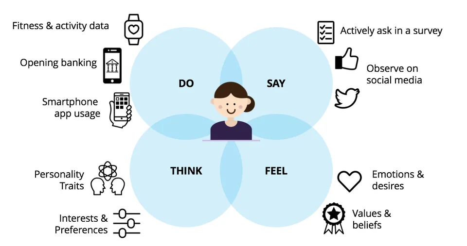
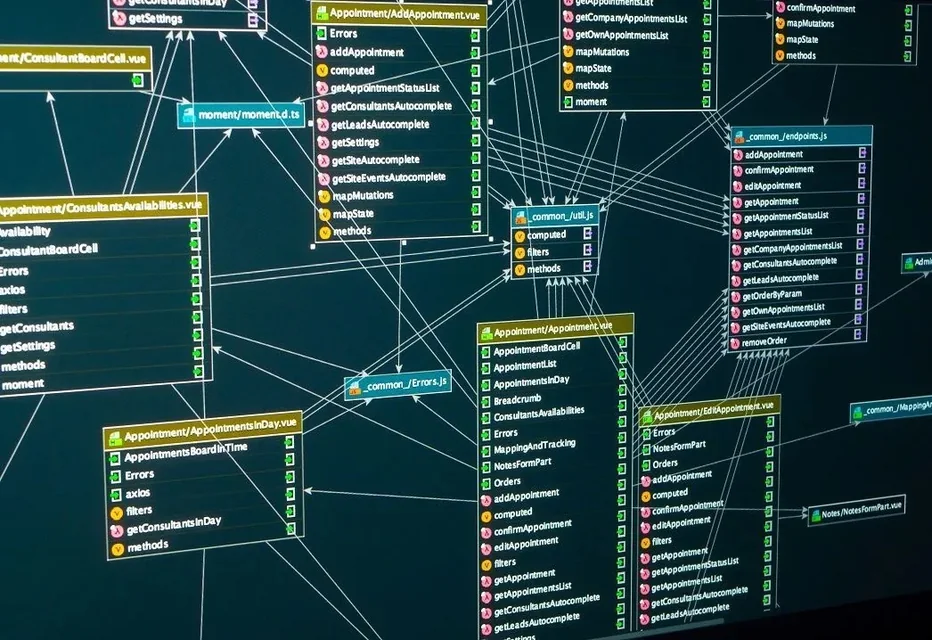
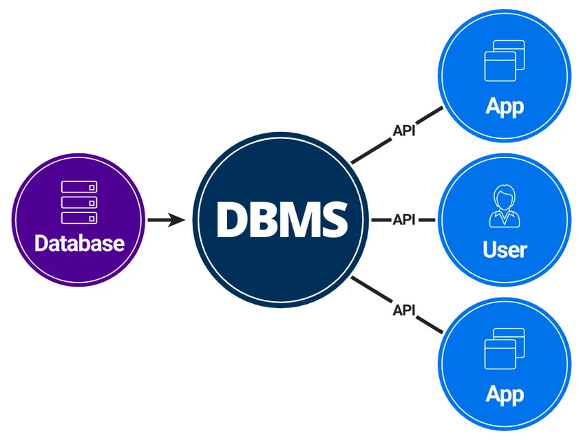
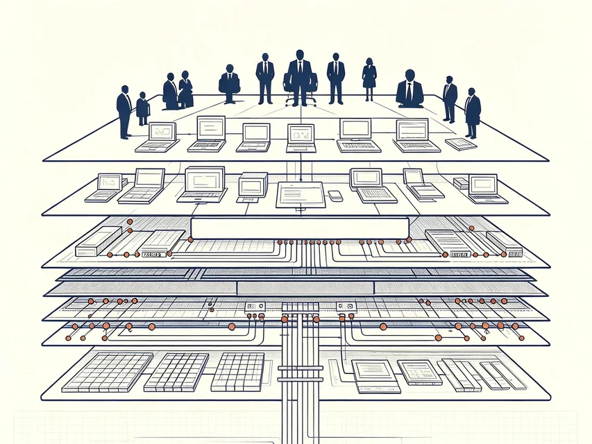
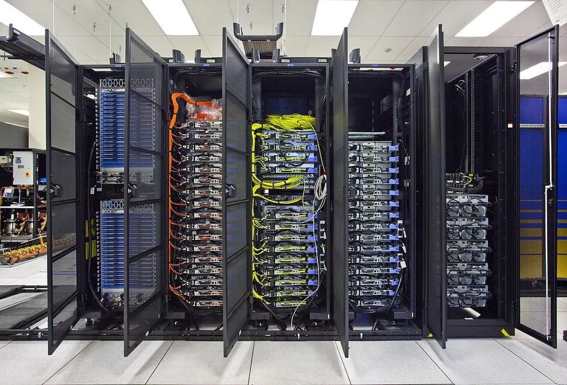
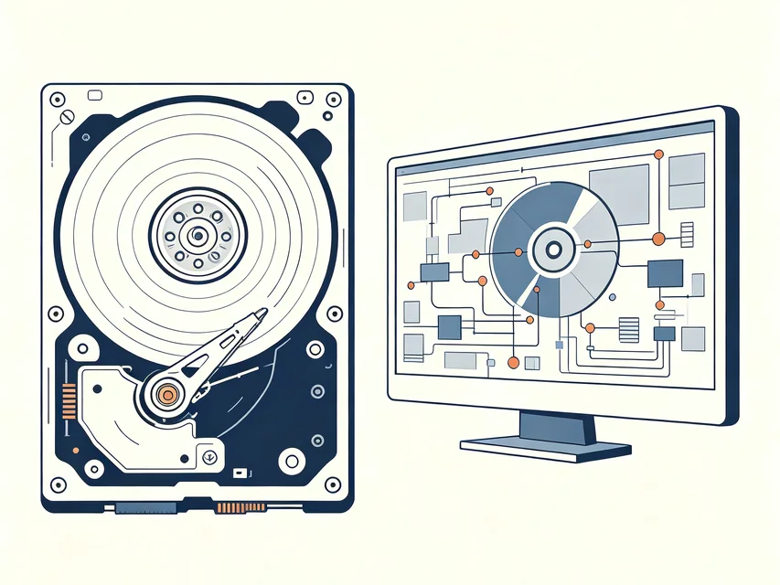

属性
玩家等级；某门课程成绩；某个商品价格
从数据到数据库管理系统和数据库系统
 VER. 2608
Built with impress.js
VER. 2608
Built with impress.js
学完后，你能用教务、游戏或网购中的例子说清数据库系统怎样管理数据
数据是数据库中存储的基本对象

描述事物的符号记录，被称为数据
数据是描述事物的符号记录
数据可以描述事物的
玩家等级；某门课程成绩；某个商品价格
对局已结束、课程已选、订单已支付
玩家与对局、学生与课程、订单与商品
数据只有和它所表达的语义结合起来，才具有可解释的意义
相同的符号记录，只有放进字段、单位和业务场景中才能确定含义
93
数据库原理课程成绩：93 分；班级人数：93 人；当前排名：第 93 名；学时：共 93 学时；课程编号：93 ；等等等等
某商品库存：93 件；书名：《93》；商品代码：93；价格：93 元；某书页数：93 页；货物重量：93 公斤；等等等等
决定含义的是符号带有的语义，来自符号所描述的对象和符号所在的语境
数据库会被应用程序使用，能够长期保存、共享有组织的数据

数据库是长期存储在计算机内有组织、可共享的大量数据的集合
DBMS 在用户与操作系统之间，负责统一管理数据
数据库管理系统是位于用户与操作系统之间的数据管理软件
成绩是数据；数据库保存成绩；DBMS 管理数据库；应用和人员组成完整系统
描述事物的符号记录，需要结合语义解释和理解
在计算机中长期存储的、有组织、可共享的数据集合
应用系统与操作系统之间的软件层，负责管理数据
当计算机系统引入数据库后，就形成了数据库系统
数据库系统由数据、数据库管理系统、应用程序、人员和运行环境共同组成

保存数据
数据的组织、控制、访问
实现具体业务的处理过程
数据库的规划、管理、维护
使用数据库系统
教务应用只向 DBMS 查询成绩，不必自己寻找磁盘上的数据文件
位于应用程序与操作系统之间
接收教务、选课和成绩查询等应用请求
决定数据放在哪个文件、怎样查找得更快
检查谁能查看成绩、多人同时选课是否冲突、故障后怎样恢复

建表、保存、查询、修改、检查和备份等工作，都由 DBMS 统一处理
定义要描述的对象、相应的属性、约束、数据模式
管理数据文件、数据字典、存取路径、存储空间
支持对数据的查询、插入、删除、修改操作
数据安全、数据完整性、并发控制、恢复
数据库装载、数据文件转储、数据库重组、性能监视
数据转换、通信、数据库互访
定义语言（DDL）描述数据结构，操纵语言（DML）在这些结构上读写数据
01
02
03
04
05
06
07
08
09
10
11
12CREATE TABLE enrollment (
enrollment_id BIGINT GENERATED ALWAYS AS IDENTITY PRIMARY KEY,
student_id CHAR(10) NOT NULL REFERENCES student(student_id),
course_id CHAR(12) NOT NULL REFERENCES course(course_id),
semester_code VARCHAR(12) NOT NULL,
final_score DECIMAL(5, 2) CHECK (final_score BETWEEN 0 AND 100),
status VARCHAR(16) NOT NULL DEFAULT 'ENROLLED',
CONSTRAINT uq_enrollment UNIQUE (student_id, course_id, semester_code)
);
SELECT s.student_id, s.name, e.course_id, e.semester_code, e.final_score, e.status
FROM student AS s JOIN enrollment AS e ON e.student_id = s.student_id
WHERE e.semester_code = '2026-FALL' AND e.status = 'ENROLLED' AND e.final_score >= 90;CREATE TABLE用于定义基本数据结构
SELECT用于完成最重要的数据操作——查询
告诉数据库管理系统在当前环境中允许哪些数据状态
数据处理是一套完整流程，数据管理关注数据的组织、保存、使用
| 比较问题 | 数据处理 | 数据管理 |
|---|---|---|
| 要做什么 | 收集、加工、使用和发布数据 | 给数据分类、命名、保存、查找和更新 |
| 教务系统 | 收集成绩，计算平均分、最高分、最低分，并生成成绩单 | 保存学生、课程和成绩，让教务与教师都能查询 |
| 常见问题 | 这批数据要算出什么结果？ | 数据放在哪里，谁能使用，修改后怎样保持一致？ |
数据需要固定的名称、保存位置和修改规则，否则会影响计算、共享和查询
由程序自己处理；通过文件系统管理；由 DBMS 管理
从电子计算机诞生到 1950 年代中期以前，数据通常由应用程序直接管理
1950 年代后期至 60 年代，因为存储技术的进步，数据可以以文件形式长期保存，但共享程度低、冗余度高
1960 年代后期以来，数据库技术发展，推动数据整体结构化，并由数据库管理系统统一管理
程序读取自己的输入；程序结束后，其他程序通常不能直接使用这些数据
文件能长期留在磁盘上，但教务、财务和学生管理仍可能各存一份学生资料
DBMS 让教务、教师和学生应用共用课程与成绩数据，并按同一规则修改

数据能否留下来、能否共用、程序是否必须跟着文件一起修改
| 比较问题 | 人工管理 | 文件系统 | 数据库系统 |
|---|---|---|---|
| 长期保存 | 通常不保存 | 可以保存 | 可以保存 |
| 共享能力 | 不共享 | 共享性弱 | 共享性强 |
| 数据独立性 | 无 | 低 | 高 |
| 主要管理者 | 应用程序 | 文件系统 | 数据库管理系统 |
| 整体结构化 | 无 | 文件内部有结构，但整体分散 | 整体数据结构化 |
DBMS 关联记录、减少重复，处理修改冲突和系统故障
学生、课程和成绩不再是三个文件，系统记录谁选了哪门课、得了多少分
教务、教师和学生读取同一份课程数据，不必各自复制后再修改
管理员更换磁盘或为数据库增加索引时，查成绩的应用通常不需要重写
系统检查教师能看哪些成绩、解决同时访问冲突，处理故障后恢复数据
数据独立性让存储和结构的变化尽量不影响应用程序

数据换到另一块磁盘，或者增加新的查询索引时，应用程序尽量不变
课程表增加一个可选字段时，原有的成绩查询程序尽量少改
数据库、DBMS、应用程序、计算机、管理员和用户需要一起工作
数据库系统 = 数据库 + DBMS + 应用程序 + 硬件与软件 + DBA 与用户
数据和使用这些数据所需的软硬件和人加在一起，才是完整的数据库系统
四个概念、六类功能、三个阶段、四个特点
数据 → 数据库 →数据库管理系统→ 数据库系统
数据定义、数据存储、数据操纵、数据库运行、数据库维护、数据库互访
人工管理 → 文件系统 → 数据库系统
结构化、共享与低冗余、物理与逻辑独立性、统一控制